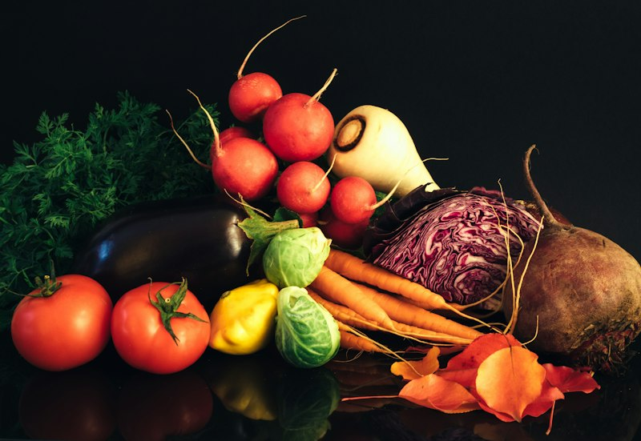

How Can We Help?
Everything you need to know about ordering, delivery, storage, subscriptions and sustainability — answered in one place.
Browse today’s catch, add items to your cart, and check out in under two minutes. You can order as a guest or create a free Harbor account to track history and save favourites.
Yes, up until your cut-off time — usually 16:00 the day before delivery. Head to your User Dashboard and edit the order, or contact our care team and we will adjust it for you.
All major debit and credit cards, digital wallets, and bank transfer for catering invoices. Payment is captured at checkout — we never store raw card data.
We deliver across the metro coastal region within two hours of dispatch, and next-day to surrounding districts. Enter your postcode at checkout to see exact windows.
Every box ships in insulated packaging with food-grade gel packs and, for longer routes, telemetry-tracked refrigeration held between 0°C and 2°C. The cold chain is continuous from dock to doorstep.
Our driver will attempt contact and, where possible, leave the box in a sheltered spot. If it cannot be delivered safely we re-schedule the next available window at no extra cost.
Fresh items are best within 1–2 days in the coldest part of your fridge. For longer storage, freeze on arrival — most fillets keep up to 3 months when vacuum-sealed and held at −18°C or below.
Move it to the fridge the night before — slow thawing preserves texture. If short on time, seal it and submerge in cold water. Never defrost on the counter at room temperature.
Choose a size and frequency, and we build a box from the freshest catch of the week. You can pause, swap, or skip any delivery from your dashboard up to 48 hours before it ships.
Yes — pause for up to eight weeks or cancel at any time in one click. No phone call required and no cancellation fees, ever.
We prioritise day-boat catches, certified fisheries and responsibly farmed species. Every product page lists its source, catch method and certification so you can choose with confidence.
It names the boat, the crew, the landing date and the water it came from. Scan the code to see that journey from catch to your kitchen.
Didn’t Find It?
We’re Always One Message Away
Our harbor care team is made up of real fishmongers and logistics specialists — not scripts.

STILL CURIOUS?
Let’s Get You Cooking
Browse the catch or reach out — we are happy to help either way.